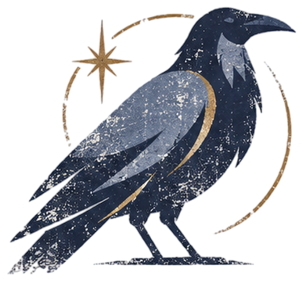
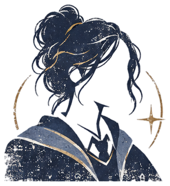
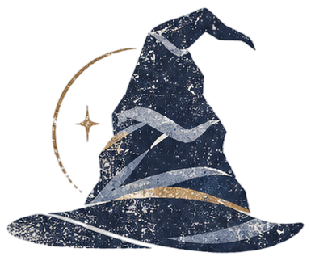
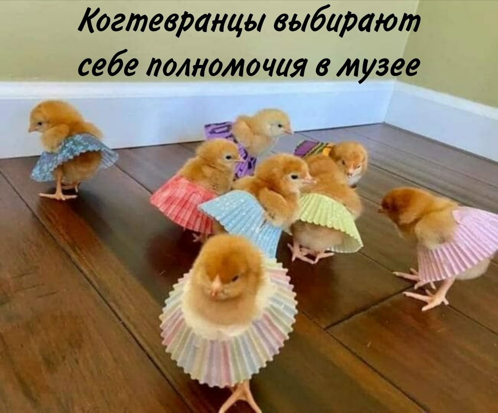

JuliettaHelwell-de-Kur
Написать домашку или реп?..
Если бы я был(а) Вороном, я бы загадала загадку про...
То как у Тедди, Ворона и Жуткого Нечто есть цветные карандаши, краски и фломастеры и по 3 домашних питомца, у Тедди есть фломастеры, но нет...

когда я поступала в Хогвартс, я надеялась…
Я рассчитывала попасть на когтевран, стать исторической душнилой и иметь короную. Пока сработало только первое:(
мои первые три вопроса после поступления в хогвартс
1) Что сдать, чтобы распределили завтра?
2) Тётя Ари, как дела?
3) ХЕЛ, ГДЕ, ЧЁРТ ВОЗЬМИ?!


почему Когтевран?
типичный Когтевран

мои главные таланты
Я умею читать реп, орать как шуш, прикольно танцую и смеюсь с шуток про собак.
таланты, которые хочу раскрыть
Я бы хотела делать красивые картинки и сводить прикольные песенки. А ещё писать классные тексты. И учиться. Хочу талант учиться.
чуть больше обо мне
Королева репа на коговской тусе Врывается в чарты, вы что блин не в курсе Пластинки крутила, на волнах вещала Оу, к первой лекции снова проспала?